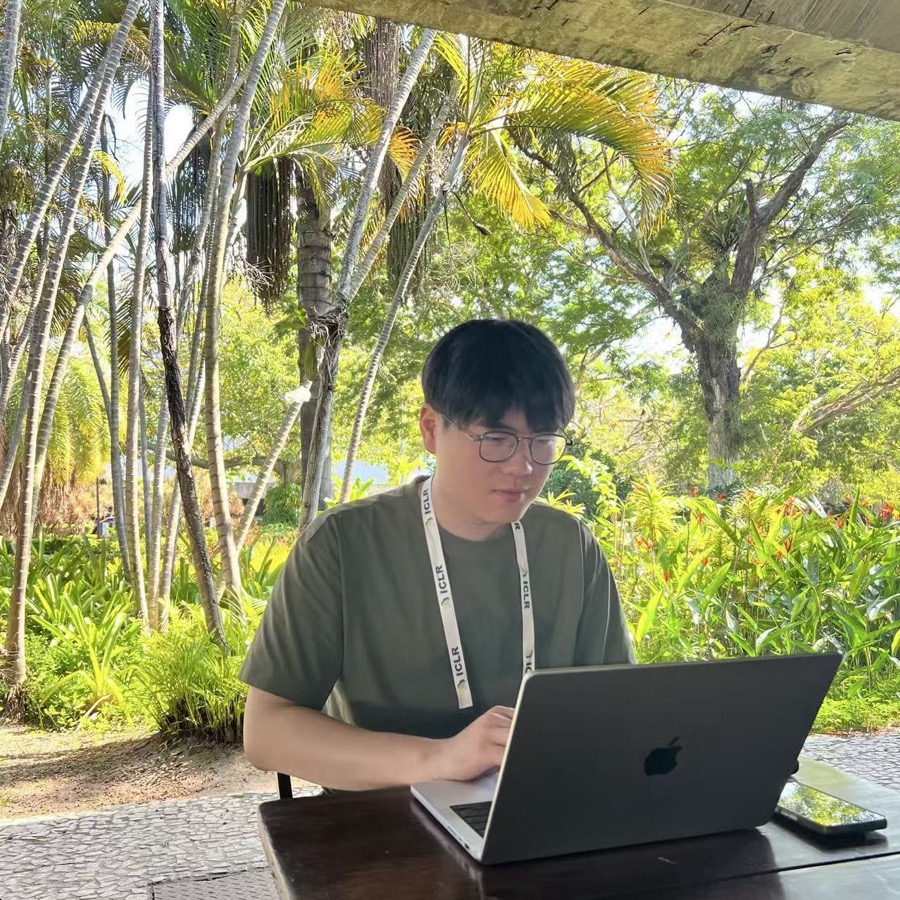

Efficiency
The core thread: reduce memory, tokens, and inference cost.
主线：降低显存、token 与推理成本。
Research line研究主线
我的主要研究方向为 Efficient AI/LLMs 与 统一多模态理解与生成模型。目前我在哈尔滨工业大学（深圳）攻读博士学位，导师为 俞俊教授，并与 黄强老师 保持紧密合作。在此之前，我于 2022 和 2025 年分别在山东大学获得计算机科学学士和硕士学位，导师是 任昭春教授。
My research interests include Efficient AI/LLMs and unified multimodal understanding & generation models. I am currently a Ph.D. student at Harbin Institute of Technology (Shenzhen), supervised by Prof. Jun Yu, and I also work closely with Prof. Qiang Huang. Before that, I obtained my Bachelor's and Master's degrees in Computer Science from Shandong University in 2022 and 2025, respectively, under the supervision of Prof. Zhaochun Ren.
The core thread: reduce memory, tokens, and inference cost.
主线：降低显存、token 与推理成本。
Research line研究主线Memory-efficient fine-tuning with sparse adapters.
通过稀疏 adapter 做内存高效微调。
ACL 2024Dynamic context selection for long-context LLMs.
长上下文 LLM 的动态上下文选择。
ICLR 2025Residual-based KV cache compression.
基于残差的 KV Cache 压缩。
arXiv 2026Sparse-first inference framework.
以稀疏性为核心的推理框架。
System系统Branch from MEFT: low-rank modules clone teacher knowledge, making each training token far more valuable.
从 MEFT 分支：用低秩模块克隆教师知识，让每个训练 token 承载更多监督信号。
NeurIPS 2025 SpotlightThe second thread: unify understanding and generation.
第二主线：统一理解与生成。
Research line研究主线Two-end-separated architecture for modality conflict.
两端分离架构，缓解模态冲突。
ICLR 2026Recent papers and milestones across the two research lines.
两条研究主线上的近期论文与进展。
Our new paper Uni-X on mitigating modality conflict for unified multimodal models has been accepted to ICLR 2026 (Poster).
我们关于统一多模态模型训练中模态冲突缓解的新论文 Uni-X 已被 ICLR 2026 (Poster) 接收。
Our paper on efficient knowledge distillation for LLMs has been accepted to NeurIPS 2025 (Spotlight). We propose Low-Rank Clone (LRC), an efficient pretraining method for SLMs.
我们关于大模型高效知识蒸馏的新论文已被 NeurIPS 2025 (Spotlight) 接收。我们提出 Low-Rank Clone (LRC)，一种高效的 SLM 预训练方法。
The list below follows the same structure as the map: efficiency first, then unified multimodal models.
下面的论文列表与上方脉络图一致：先展示效率主线，再展示统一多模态主线。
Systems that turn the efficiency line into reusable infrastructure.
把效率主线沉淀成可复用系统。
统一稀疏推理框架，支持物理淘汰、逻辑掩码与混合压缩。
A unified sparse inference engine supporting physical eviction, logical masking, and hybrid compression.